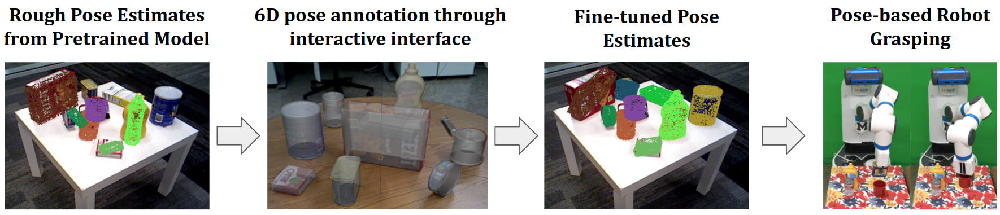
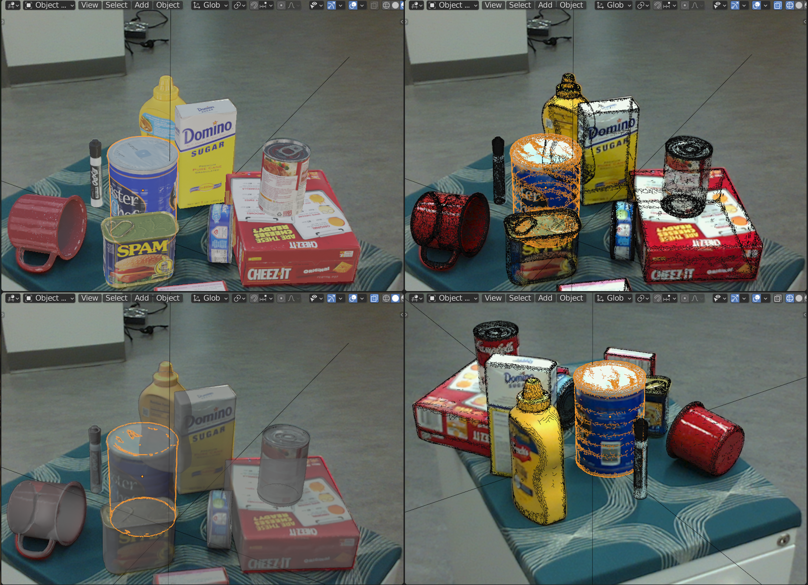
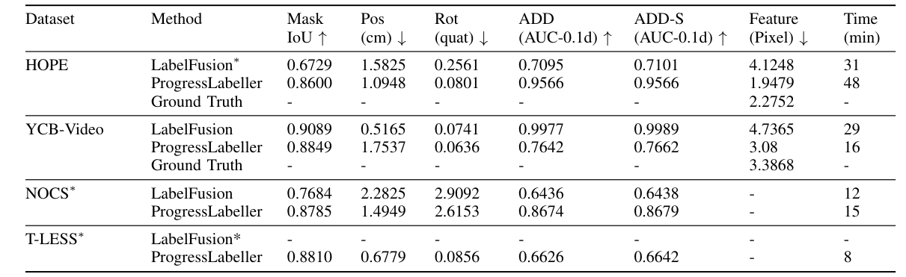
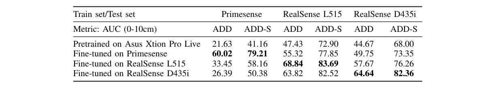
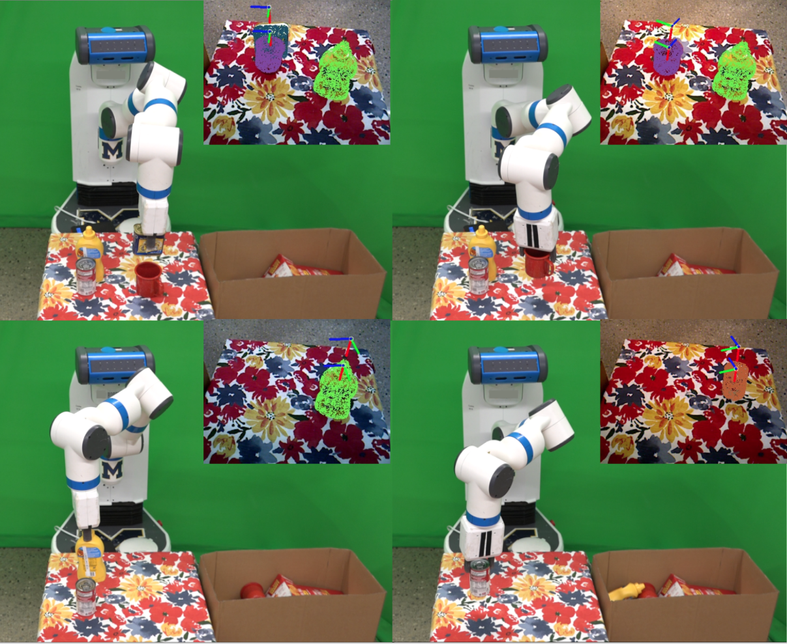

ProgressLabeller: Visual Data Stream Annotation for Training Object-Centric 3D Perception
Xiaotong Chen, Huijie Zhang, Zeren Yu, Stanley Lewis, Odest Chadwicke Jenkins

Visual perception tasks often require vast amounts of labelled data, including 3D poses and image space segmentation masks. The process of creating such training data sets can prove difficult or time-intensive to scale up to efficacy for general use. Consider the task of pose estimation for rigid objects. Deep neural network based approaches have shown good performance when trained on large, public datasets. However, adapting these networks for other novel objects, or fine-tuning existing models for different environments, requires significant time investment to generate newly labelled instances. Towards this end, we propose ProgressLabeller as a method for more efficiently generating large amounts of 6D pose training data from color images sequences for custom scenes in a scalable manner. ProgressLabeller is intended to also support transparent or translucent objects, for which the previous methods based on depth dense reconstruction will fail.
We demonstrate the effectiveness of ProgressLabeller by rapidly create a dataset of over 1M samples with which we fine-tune a state-of-the-art pose estimation network in order to markedly improve the downstream robotic grasp success rates.
Different from methods that align object 3D models with reconstructed point clouds, our system created a multi-view graphical user interface that overlays the object model's projection onto the original RGB images, so that the object pose errors could be easily detected from areas with misalignment of object texture, silhouette and boundary, as shown below. Compared to depth reconstructed based methods, the pose label accuracy is improved based on higher accuracy of RGB than depth sensing. Besides, the system can also be used to label scenes with unreliable depth from transparent objects and backgrounds.

The image above shows the Blender interface. Users can freely move or rotate objects to align with RGB images from multiple views. The top-left view shows the aligned object models with rendered texture at labelled poses. The bottom-left view and top-right view show the silhouettes and boundaries respectively at the same camera view, and the bottom-right view shows the boundaries from another view for validation.
We evaluated ProgressLabeller with several metrics: accuracy and time on labelling public datasets; pose estimation accuracy and downstream robotic grasping success rate improvement over the pretrained deep object pose estimator.
Annotation Accuracy on Public Datasets

From the comparison, we see both labellers took similar amount of time to annotate data streams, while ProgressLabeller is more accurate and robust in most streams. LabelFusion has higher accuracy on YCB-Video dataset, which has a large feature-based pixel distance.
Cross-sensor Validation on Pose Estimation Accuracy

We report the AUC for ADD and ADD-S metrics between 0 and 10cm. We find the fine-tuned dataset recognizes the sensor modality and noise difference between 3 cameras as the test set ADD and ADD-S are mostly the highest on the same training set.
Pose and Grasp Improvement through Fine-tuning
We repeated grasping on every tolerance for 5 times based on the pose estimates. Overall, the fine-tuning over ProgressLabeller data improves the grasping success rate the most, compared with data generated using LabelFusion and Blenderproc.
Below is a table cleaning task accomplished by pose-based grasping.

@article{chen2022progresslabeller,
author = {Chen, Xiaotong and Zhang, Huijie and Yu, Zeren and Lewis, Stanley and Jenkins, Odest Chadwicke},
title = {ProgressLabeller: Visual Data Stream Annotation for Training Object-Centric 3D Perception},
year = {2022},
journal={International Conference on Intelligent Robots and Systems (IROS)}
}